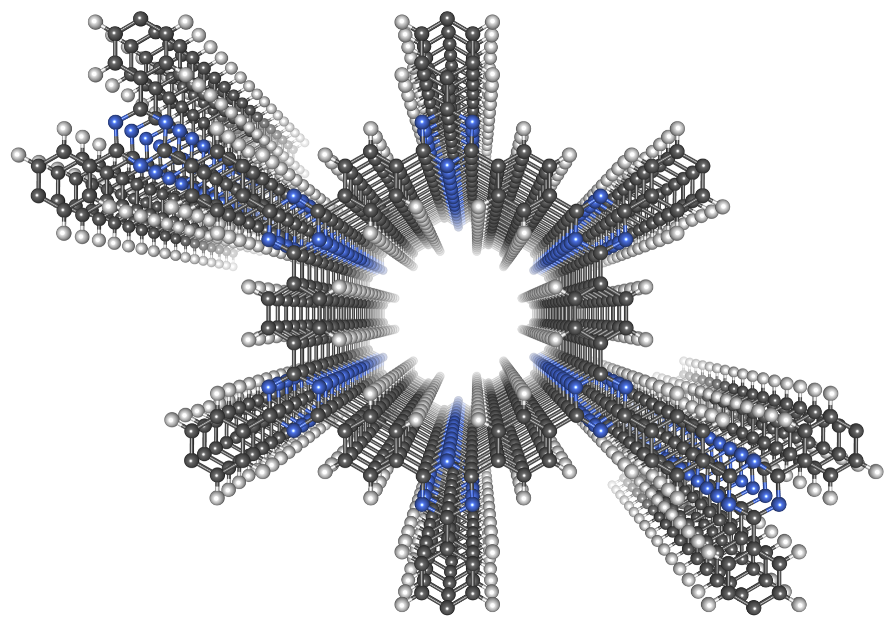
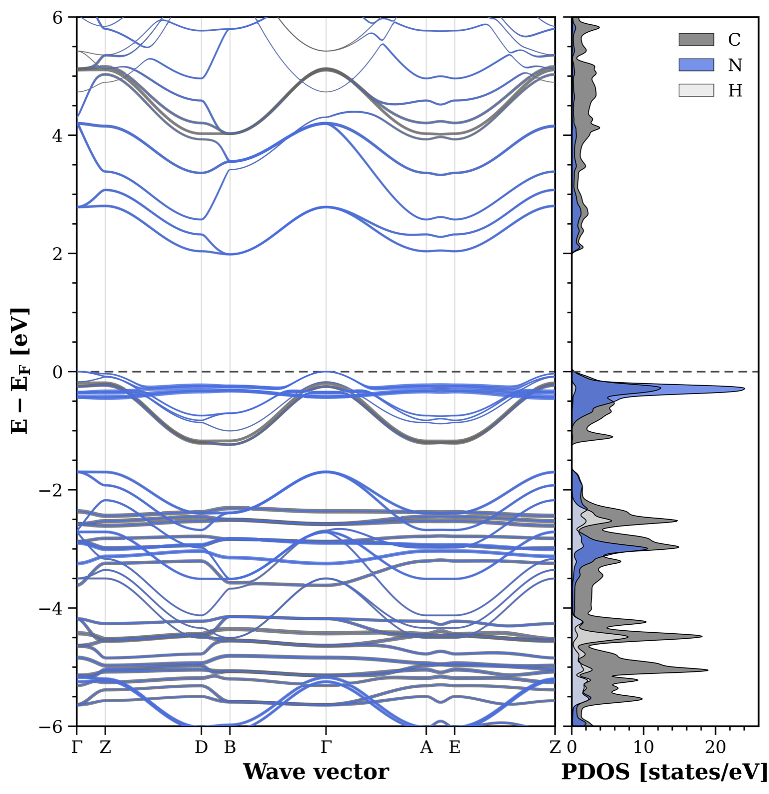

Condensed Matter
Matter, interactions,
emergent questions.
First-principles studies of porous frameworks: stacking, pore architecture, and electronic structure.
First-principles materials modeling
Pore-size engineering
of covalent triazine frameworks.
Connecting molecular architecture with the mechanical response and electronic structure of porous organic frameworks.
Ángel D. Salazar and Henry P. Pinto · CompNano Group, Yachay Tech University
Submitted to Journal of Physics: Conference Series · Under review
Research question
How do stacking registry, linker architecture, and layer number affect the electronic structure and mechanical response of crystalline covalent triazine frameworks (CTFs)?
Summary
We investigate crystalline CTFs through density-functional theory, comparing AA and AB stacking, a series of expanded aromatic linkers, and monolayer-to-trilayer slabs. After identifying AA as the lower-energy registry among the two pristine bulk structures considered, we examine the TBT, TBBT, and TBBBT bulk frameworks, whose triazine units are linked by one, two, and three benzene rings, respectively.
The calculations reveal complementary effects of framework architecture and layer number: expanded bulk frameworks have smaller electronic gaps and lower bulk moduli, while adding layers to pristine TBT-AA reduces its gap toward the bulk value.
Methods
- First-principles calculations in VASP using the PAW method, PBE exchange-correlation, and Grimme D3 dispersion corrections.
- An 800 eV plane-wave cutoff and reciprocal-space spacing of 0.049 Å−1, selected to converge total energies within 1 meV/atom; relaxation to residual forces below 0.01 eV/Å.
- Third-order Birch–Murnaghan fits for bulk energy–volume curves, and a two-dimensional energy–area equation of state for slabs.
- Projected band structures and element-projected densities of states at the optimized geometries.
Results & figures


Stacking registry. Pristine bulk TBT-AA is lower in calculated ground-state energy than TBT-AB by approximately 4 meV/atom. This comparison motivates the AA reference for the pore-expansion and layer-number series; it does not establish a finite-temperature free-energy preference.
Pore-expansion series. Extending the aromatic linker increases the opposing-nitrogen pore dimension from 14.05 to 31.45 Å. Across the same series, the bulk modulus decreases by about 50% and the electronic gap by about 25%.
| Framework | N–N pore dimension (Å) | Bulk modulus (GPa) | Electronic gap (eV) |
|---|---|---|---|
| TBT-AA | 14.05 | 7.84 | 2.05 |
| TBBT-AA | 22.75 | 5.25 | 1.68 |
| TBBBT-AA | 31.45 | 3.88 | 1.54 |


Layer-number dependence. For TBT-AA slabs, the electronic gap decreases from 2.66 eV in the monolayer to 2.37 eV in the bilayer and 2.21 eV in the trilayer, approaching the 2.05 eV bulk reference. The complete-slab area modulus increases from 35.20 to 157.04 N/m.
These are semilocal Kohn–Sham gaps, not optical excitation energies. Linker expansion changes composition and electronic connectivity as well as pore geometry, so the trends do not isolate pore size as the sole cause. The slab area modulus describes the complete slab and is distinct from the bulk modulus in GPa.
Manuscript
Pore-Size Engineering of Covalent Triazine Frameworks: First-Principles Insights
Ángel D. Salazar and Henry P. Pinto.
CompNano Group, School of Physical Sciences and Nanotechnology, Yachay Tech University.
Submitted to Journal of Physics: Conference Series (IOP Publishing), proceedings of the VI International Congress of Physics (VI-ICPE 2026). The manuscript is currently under review.